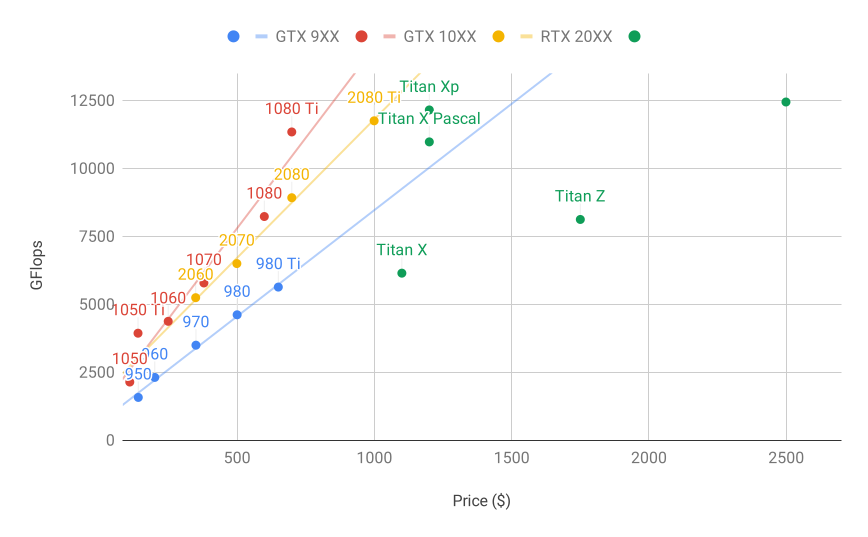
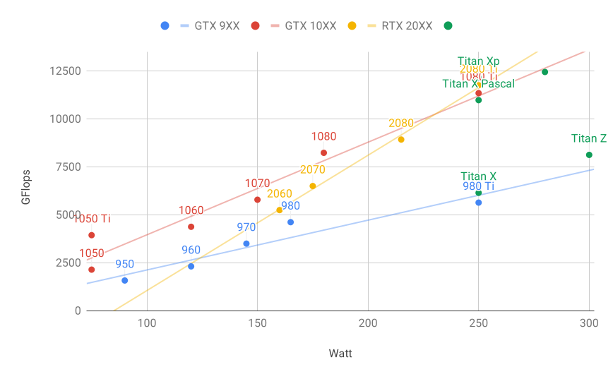

Chọn Máy Chủ Và GPU¶
Huấn luyện deep learning thường yêu cầu lượng tính toán lớn. Hiện nay, GPU là bộ tăng tốc phần cứng có chi phí-hiệu năng tốt nhất cho deep learning. Cụ thể, so với CPU, GPU rẻ hơn và cung cấp hiệu năng cao hơn, thường hơn một bậc độ lớn. Hơn nữa, một máy chủ đơn có thể hỗ trợ nhiều GPU, lên đến 8 GPU với các máy chủ cao cấp. Các con số phổ biến hơn là tối đa 4 GPU cho một workstation kỹ thuật, vì yêu cầu về nhiệt, làm mát và điện năng tăng rất nhanh vượt quá những gì một tòa nhà văn phòng có thể hỗ trợ. Với các triển khai lớn hơn, điện toán đám mây (ví dụ các instance P3 và G4 của Amazon) là một giải pháp thực tế hơn nhiều.
Chọn Máy Chủ¶
Thông thường không cần mua CPU cao cấp với nhiều luồng vì phần lớn tính toán diễn ra trên GPU. Dù vậy, do global interpreter lock (GIL) trong Python, hiệu năng đơn luồng của CPU có thể quan trọng trong các tình huống ta có 4--8 GPU. Nếu mọi thứ khác như nhau, điều này gợi ý rằng CPU có số lõi nhỏ hơn nhưng xung nhịp cao hơn có thể là lựa chọn kinh tế hơn. Ví dụ, khi chọn giữa CPU 6 lõi 4 GHz và CPU 8 lõi 3.5 GHz, lựa chọn trước đáng ưu tiên hơn nhiều, dù tốc độ tổng hợp của nó thấp hơn. Một cân nhắc quan trọng là GPU dùng rất nhiều điện và do đó tỏa rất nhiều nhiệt. Điều này đòi hỏi làm mát rất tốt và chassis đủ lớn để dùng GPU. Hãy làm theo các hướng dẫn dưới đây nếu có thể:
- Nguồn Điện. GPU dùng lượng điện đáng kể. Hãy dự trù tối đa 350W cho mỗi thiết bị (kiểm tra nhu cầu đỉnh của card đồ họa thay vì nhu cầu điển hình, vì code hiệu quả có thể dùng nhiều năng lượng). Nếu bộ nguồn của bạn không đáp ứng nhu cầu, bạn sẽ thấy hệ thống trở nên không ổn định.
- Kích Thước Chassis. GPU lớn và các đầu nối nguồn phụ thường cần thêm không gian. Ngoài ra, chassis lớn dễ làm mát hơn.
- Làm Mát GPU. Nếu bạn có nhiều GPU, bạn có thể muốn đầu tư vào làm mát bằng nước. Ngoài ra, hãy nhắm đến thiết kế tham chiếu ngay cả khi chúng có ít quạt hơn, vì chúng đủ mỏng để cho phép hút khí giữa các thiết bị. Nếu bạn mua GPU nhiều quạt, nó có thể quá dày để lấy đủ khí khi lắp nhiều GPU và bạn sẽ gặp throttling do nhiệt.
- Khe PCIe. Di chuyển dữ liệu đến và từ GPU (và trao đổi dữ liệu giữa các GPU) đòi hỏi nhiều băng thông. Chúng tôi khuyến nghị khe PCIe 3.0 với 16 lane. Nếu bạn gắn nhiều GPU, hãy đọc kỹ mô tả bo mạch chủ để bảo đảm băng thông 16\(\times\) vẫn khả dụng khi nhiều GPU được dùng cùng lúc và bạn đang nhận PCIe 3.0 thay vì PCIe 2.0 cho các khe bổ sung. Một số bo mạch chủ hạ xuống băng thông 8\(\times\) hoặc thậm chí 4\(\times\) khi lắp nhiều GPU. Điều này một phần là do số lane PCIe mà CPU cung cấp.
Tóm lại, dưới đây là một số khuyến nghị để xây dựng máy chủ deep learning:
- Người mới bắt đầu. Mua một GPU cấp thấp với mức tiêu thụ điện thấp (GPU gaming rẻ phù hợp cho deep learning dùng 150--200W). Nếu may mắn, máy tính hiện tại của bạn hỗ trợ nó.
- 1 GPU. Một CPU cấp thấp với 4 lõi là đủ và hầu hết bo mạch chủ đều đáp ứng. Hãy nhắm đến ít nhất 32 GB DRAM và đầu tư vào SSD để truy cập dữ liệu cục bộ. Bộ nguồn 600W nên đủ. Mua GPU có nhiều quạt.
- 2 GPU. Một CPU cấp thấp với 4-6 lõi là đủ. Hãy nhắm đến 64 GB DRAM và đầu tư vào SSD. Bạn sẽ cần khoảng 1000W cho hai GPU cao cấp. Về bo mạch chủ, hãy chắc chắn chúng có hai khe PCIe 3.0 x16. Nếu có thể, hãy mua bo mạch chủ có hai khoảng trống (khoảng cách 60mm) giữa các khe PCIe 3.0 x16 để có thêm không khí. Trong trường hợp này, mua hai GPU có nhiều quạt.
- 4 GPU. Hãy chắc chắn rằng bạn mua CPU có tốc độ đơn luồng tương đối nhanh (tức xung nhịp cao). Bạn có lẽ sẽ cần CPU với số lane PCIe lớn hơn, chẳng hạn AMD Threadripper. Bạn có thể sẽ cần bo mạch chủ tương đối đắt để có 4 khe PCIe 3.0 x16 vì chúng có lẽ cần PLX để ghép kênh các lane PCIe. Mua GPU có thiết kế tham chiếu, hẹp và cho không khí đi vào giữa các GPU. Bạn cần bộ nguồn 1600--2000W và ổ cắm trong văn phòng của bạn có thể không hỗ trợ mức đó. Máy chủ này có thể sẽ chạy ồn và nóng. Bạn không muốn đặt nó dưới bàn làm việc. Khuyến nghị 128 GB DRAM. Mua SSD (1--2 TB NVMe) cho lưu trữ cục bộ và một nhóm ổ cứng trong cấu hình RAID để lưu dữ liệu.
- 8 GPU. Bạn cần mua chassis máy chủ đa GPU chuyên dụng với nhiều bộ nguồn dự phòng (ví dụ 2+1 cho 1600W mỗi bộ nguồn). Điều này sẽ yêu cầu CPU máy chủ hai socket, 256 GB ECC DRAM, card mạng nhanh (khuyến nghị 10 GBE), và bạn sẽ cần kiểm tra liệu máy chủ có hỗ trợ dạng vật lý của GPU hay không. Luồng khí và vị trí dây khác nhau đáng kể giữa GPU tiêu dùng và GPU máy chủ (ví dụ RTX 2080 so với Tesla V100). Điều này có nghĩa là bạn có thể không lắp được GPU tiêu dùng vào máy chủ do không đủ khoảng trống cho cáp nguồn hoặc thiếu bó dây phù hợp (như một trong các đồng tác giả đã đau đớn phát hiện).
Chọn GPU¶
Hiện nay, AMD và NVIDIA là hai nhà sản xuất GPU chuyên dụng chính. NVIDIA là bên đầu tiên bước vào lĩnh vực deep learning và cung cấp hỗ trợ tốt hơn cho các framework deep learning thông qua CUDA. Do đó, hầu hết người mua chọn GPU NVIDIA.
NVIDIA cung cấp hai loại GPU, nhắm đến người dùng cá nhân (ví dụ qua dòng GTX và RTX) và người dùng doanh nghiệp (qua dòng Tesla). Hai loại GPU này cung cấp sức mạnh tính toán tương đương. Tuy nhiên, GPU cho người dùng doanh nghiệp thường dùng làm mát cưỡng bức (thụ động), nhiều bộ nhớ hơn và bộ nhớ ECC (sửa lỗi). Các GPU này phù hợp hơn cho trung tâm dữ liệu và thường đắt gấp mười lần GPU tiêu dùng.
Nếu bạn là một công ty lớn với hơn 100 máy chủ, bạn nên cân nhắc dòng NVIDIA Tesla hoặc dùng máy chủ GPU trên đám mây. Với phòng thí nghiệm hoặc công ty nhỏ đến vừa có hơn 10 máy chủ, dòng NVIDIA RTX có khả năng hiệu quả chi phí nhất. Bạn có thể mua các máy chủ cấu hình sẵn với chassis Supermicro hoặc Asus chứa 4--8 GPU hiệu quả.
Các nhà cung cấp GPU thường phát hành một thế hệ mới mỗi một đến hai năm, chẳng hạn dòng GTX 1000 (Pascal) phát hành năm 2017 và dòng RTX 2000 (Turing) phát hành năm 2019. Mỗi dòng cung cấp nhiều model khác nhau với các mức hiệu năng khác nhau. Hiệu năng GPU chủ yếu là sự kết hợp của ba tham số sau:
- Sức Mạnh Tính Toán. Nói chung, ta tìm sức mạnh tính toán dấu phẩy động 32-bit. Huấn luyện dấu phẩy động 16-bit (FP16) cũng đang trở nên phổ biến. Nếu bạn chỉ quan tâm đến dự đoán, bạn cũng có thể dùng số nguyên 8-bit. Thế hệ GPU Turing mới nhất cung cấp tăng tốc 4-bit. Đáng tiếc là tại thời điểm viết, các thuật toán huấn luyện mạng độ chính xác thấp vẫn chưa phổ biến.
- Kích Thước Bộ Nhớ. Khi mô hình của bạn lớn hơn hoặc batch dùng trong huấn luyện lớn hơn, bạn sẽ cần nhiều bộ nhớ GPU hơn. Hãy kiểm tra bộ nhớ HBM2 (High Bandwidth Memory) so với GDDR6 (Graphics DDR). HBM2 nhanh hơn nhưng đắt hơn nhiều.
- Băng Thông Bộ Nhớ. Bạn chỉ có thể tận dụng tối đa sức mạnh tính toán khi có đủ băng thông bộ nhớ. Hãy tìm bus bộ nhớ rộng nếu dùng GDDR6.
Với hầu hết người dùng, chỉ cần xem sức mạnh tính toán là đủ. Lưu ý rằng nhiều GPU cung cấp các loại tăng tốc khác nhau. Ví dụ, TensorCores của NVIDIA tăng tốc một tập con toán tử lên 5\(\times\). Hãy bảo đảm thư viện của bạn hỗ trợ điều này. Bộ nhớ GPU không nên dưới 4 GB (8 GB tốt hơn nhiều). Cố gắng tránh dùng GPU đồng thời để hiển thị GUI (hãy dùng đồ họa tích hợp thay thế). Nếu bạn không thể tránh, hãy thêm 2 GB RAM để an toàn.
fig_flopsvsprice so sánh sức mạnh tính toán dấu phẩy động 32-bit và giá của các model thuộc dòng GTX 900, GTX 1000 và RTX 2000. Giá đề xuất là giá tìm thấy trên Wikipedia tại thời điểm viết.

Ta có thể thấy một số điều:
- Trong mỗi dòng, giá và hiệu năng gần như tỷ lệ thuận. Các model Titan có mức giá chênh đáng kể để đổi lấy lượng bộ nhớ GPU lớn hơn. Tuy nhiên, các model mới hơn có hiệu quả chi phí tốt hơn, như có thể thấy khi so sánh 980 Ti và 1080 Ti. Giá có vẻ không cải thiện nhiều với dòng RTX 2000. Tuy nhiên, điều này là do chúng cung cấp hiệu năng độ chính xác thấp vượt trội hơn nhiều (FP16, INT8 và INT4).
- Tỷ lệ hiệu năng trên chi phí của dòng GTX 1000 lớn hơn dòng 900 khoảng hai lần.
- Với dòng RTX 2000, hiệu năng (tính bằng GFLOPs) là một hàm affine của giá.

fig_wattvsprice cho thấy mức tiêu thụ năng lượng tăng chủ yếu tuyến tính theo lượng tính toán. Thứ hai, các thế hệ sau hiệu quả hơn. Điều này có vẻ bị mâu thuẫn bởi đồ thị tương ứng với dòng RTX 2000. Tuy nhiên, đây là hệ quả của TensorCores, vốn tiêu thụ năng lượng không cân xứng.
Tóm Tắt¶
- Hãy chú ý đến điện năng, lane bus PCIe, tốc độ đơn luồng của CPU và làm mát khi xây dựng máy chủ.
- Bạn nên mua thế hệ GPU mới nhất nếu có thể.
- Dùng đám mây cho các triển khai lớn.
- Máy chủ mật độ cao có thể không tương thích với mọi GPU. Hãy kiểm tra các đặc tả cơ khí và làm mát trước khi mua.
- Dùng FP16 hoặc độ chính xác thấp hơn để đạt hiệu quả cao.